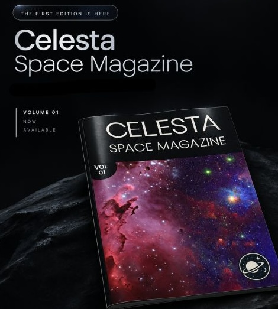

New frontiers
This issue's theme is new frontiers, chosen mostly because 2026 refuses to slow down: private companies are launching people into orbit with the regularity of a commuter train, and entire nations are edging toward their first crewed missions. Every article here, one way or another, is about someone doing something for the first time and hoping gravity doesn't notice.